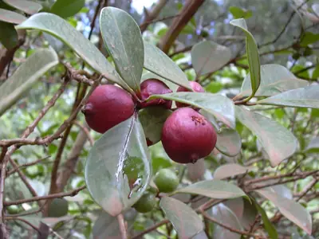

pranet · 出典付きの植物図鑑
テリハバンジロウ
Psidium cattleyanum Sabine · Myrtaceae

Psidium cattleyanum, commonly known as Cattley guava, strawberry guava or cherry guava, is a small tree in the Myrtaceae (myrtle) family. The species is named in honour of English horticulturist William Cattley. The red-fruited variety, P. cattleyanum var. cattleyanum, is commonly known as purple guava, red cattley guava, red strawberry guava and red cherry guava. The yellow-fruited variety, P. cattleyanum var. littorale is variously known as yellow cattley guava, yellow strawberry guava, yellow cherry guava, lemon guava and in Hawaii as waiawī.
出典: Wikipedia (en): Psidium cattleyanum · CC BY-SA 4.0
異名: Episyzygium oahuense Suess. & A.Ludw., Eugenia ferruginea Sieber ex C.Presl, Eugenia oxygona Koidz., Eugenia pseudovenosa H.Perrier, Eugenia urceolata Cordem., Guajava arborea (Vell.) Kuntze, Guajava buxifolia (Nutt.) Kuntze, Guajava cattleiana (Afzel. ex Sabine) Kuntze, Guajava cattleyana (Sabine) Kuntze, Guajava humilis (Vell.) Kuntze, Guajava obovata (Mart. ex DC.) Kuntze, Psidium arboreum Vell., Psidium buxifolium Nutt., Psidium cattleianum Sabine, Psidium chinense Lodd. ex Chardonnier, Psidium coriaceum O.Berg, Psidium ferrugineum C.Presl, Psidium gaudichaudianum Proença & Faria, Psidium humile Vell., Psidium indicum Bojer
同定や利用は自己責任でお願いします。この図鑑だけを根拠に野生の植物を食べないでください。
出典
- 学名: World Flora Online Plant List 2026-06 · CC0 1.0
- 名前: Wikipedia の記事名と Wikidata · CC0 1.0（Wikidata）。記事名は事実
- 説明: Wikipedia (en): Psidium cattleyanum · CC BY-SA 4.0
- 食用・毒性: World Checklist of Useful Plant Species (Diazgranados et al. 2020, RBG Kew) · CC BY 4.0
- 分布: World Checklist of Vascular Plants (WCVP), RBG Kew, version 2026-06-04 · CC BY 3.0
このページは pranet のデータから自動生成しています。コードは MIT、データは項目ごとのライセンス（説明）。